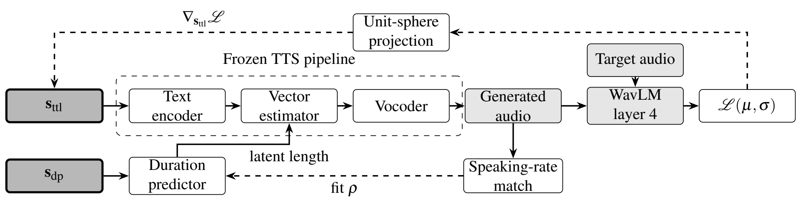

Extracting Voice Styles from Frozen TTS Models via Gradient-Based Inverse Optimization
Department of Computer Science, Hanyang University, Seoul, South Korea
kdrkdrkdr@hanyang.ac.kr
Abstract
Some text-to-speech systems ship a synthesis model and preset style vectors but withhold the reference encoder that turns a recording into a style vector, so a user cannot obtain a style for a new voice. We recover that vector without the encoder by inverting the released pipeline with gradient descent: all weights stay frozen and only the style vector is optimized, against time-pooled WavLM statistics of one recording of the target voice. The objective discards the time axis, so no transcript is needed. Two constraints from the release make the recovered vector a complete, drop-in style: each row stays on the unit sphere where the presets lie, and the duration style, invisible to a time-pooled loss, is fitted to the recording's speaking rate. On SupertonicTTS, over 147 speakers and 100 held-out sentences each, ECAPA-TDNN similarity rises from 0.129 to 0.419, every speaker ends closer to its target than its preset, and the pooled word error rate stays below that of the presets. A verifier at its equal-error point accepts 52% of them as the target speaker, against 1% of the presets.
System Overview
The deployment pattern we target is a TTS release that publishes the synthesis model and preset style vectors while keeping the reference encoder private. Few systems fit it. Most either ship the speaker encoder with the weights (CosyVoice), prompt directly on reference audio without an explicit style vector (F5-TTS), or condition on discrete codec tokens (VALL-E). We study SupertonicTTS, which fits the pattern and is small enough to differentiate through end to end (Fig. 1).

Demo
Five voices from examples/01 to 05, each extracted from one reference recording with the released code at its default settings, then used to synthesize two sentences in each of the five languages the model supports. The first row of every table is the reference recording the style was extracted from. None of these sentences were used during extraction. Every clip was transcribed with Whisper-large-v3 and matches its sentence word for word. Each extracted style can be downloaded as the JSON file the synthesizer reads (style_ttl and style_dp, same format as the shipped presets).
English
| Speaker 01 style JSON | Speaker 02 style JSON | Speaker 03 style JSON | Speaker 04 style JSON | Speaker 05 style JSON | |
|---|---|---|---|---|---|
| Reference recording | |||||
| The morning fog lifted slowly, and the whole valley filled with sunlight. | |||||
| The train leaves early tomorrow, so we should pack our bags tonight. |
Korean
| Speaker 01 style JSON | Speaker 02 style JSON | Speaker 03 style JSON | Speaker 04 style JSON | Speaker 05 style JSON | |
|---|---|---|---|---|---|
| Reference recording | |||||
| 아침 안개가 천천히 걷히자 골짜기 전체가 햇살로 가득 찼습니다. | |||||
| 기차가 내일 아침 일찍 떠나니 오늘 밤에 짐을 챙겨 두어야 합니다. |
Spanish
| Speaker 01 style JSON | Speaker 02 style JSON | Speaker 03 style JSON | Speaker 04 style JSON | Speaker 05 style JSON | |
|---|---|---|---|---|---|
| Reference recording | |||||
| La niebla de la mañana se levantó despacio y todo el valle se llenó de sol. | |||||
| El tren sale mañana temprano, así que deberíamos preparar las maletas esta noche. |
Portuguese
| Speaker 01 style JSON | Speaker 02 style JSON | Speaker 03 style JSON | Speaker 04 style JSON | Speaker 05 style JSON | |
|---|---|---|---|---|---|
| Reference recording | |||||
| A neblina da manhã se dissipou devagar, e o vale inteiro se encheu de sol. | |||||
| O trem sai cedo amanhã, então devemos arrumar as malas hoje à noite. |
French
| Speaker 01 style JSON | Speaker 02 style JSON | Speaker 03 style JSON | Speaker 04 style JSON | Speaker 05 style JSON | |
|---|---|---|---|---|---|
| Reference recording | |||||
| Le brouillard du matin s'est levé lentement et toute la vallée s'est remplie de soleil. | |||||
| Demain, le train part de bonne heure. Préparons donc nos valises ce soir. |
Synthesizer: the public Supertonic 2 release (10 preset styles, no reference encoder). Reference recordings: the first five references of Seed-TTS Eval, Common Voice subset (CC0). Sentences were written for this page. The style files are provided for these five consented, CC0 recordings only. Do not clone a voice without the speaker's explicit consent.